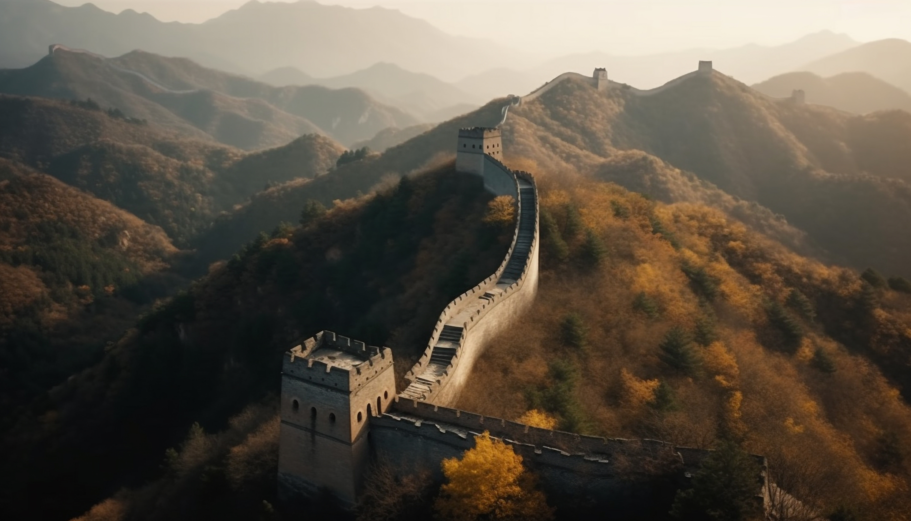

| The Sheikh Zayed Grand Mosque Center (SZGMC) was established by decree number 18 year 2008 issued by HH Sheikh Mansoor Bin Zayed Al Nahyan, Deputy Prime Minister of UAE, Minister of Presidential Affairs, in 2008 and it's amendment number 7 year 2012 |
 |
The Burj Khalifa (known as the Burj Dubai prior to its inauguration in 2010) is a skyscraper in Dubai, United Arab Emirates. It is known for being the world's tallest building. With a total height of 829.8 m (2,722 ft, or just over half a mile) and a roof height (excluding antenna, but including a 242.6 m spire[2]) of 828 m (2,717 ft), the Burj Khalifa has been the tallest structure and building in the world since its topping out in 2009, supplanting Taipei 101, the previous holder of that status |
 |
| The Great Wall of China (traditional Chinese: 萬里長城; simplified Chinese: 万里长城; pinyin: Wànlǐ Chángchéng, literally "ten thousand li long wall") is a series of fortifications that were built across the historical northern borders of ancient Chinese states and Imperial China as protection against various nomadic groups from the Eurasian Steppe |
 |
The Colosseum (/ˌkɒləˈsiːəm/ KOL-ə-SEE-əm; Italian: Colosseo [kolosˈsɛːo]) is an elliptical amphitheatre in the centre of the city of Rome, Italy, just east of the Roman Forum. It is the largest ancient amphitheatre ever built, and is still the largest standing amphitheatre in the world, despite its age. Construction began under the emperor Vespasia in 72[1] and was completed in 80 AD under his successor and heir, Titus |
 |
| The Egyptian pyramids are ancient masonry structures located in Egypt. Sources cite at least 118 identified "Egyptian" pyramids.[1][2] Approximately 80 pyramids were built within the Kingdom of Kush, now located in the modern country of Sudan. Of those located in modern Egypt, most were built as tombs for the country's pharaohs and their consorts during the Old and Middle Kingdom periods |
 |
As the name implies, suspension bridges, like the Golden Gate Bridge or Brooklyn Bridge, suspend the roadway by cables, ropes or chains from two tall towers. These towers support the majority of the weight as compression pushes down on the suspension bridge's deck and then travels up the cables, ropes or chains to transfer compression to the towers. The towers then dissipate the compression directly into the earth |
 |